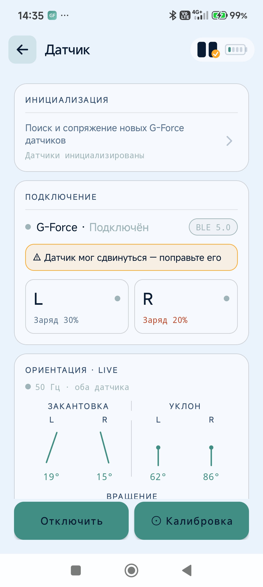
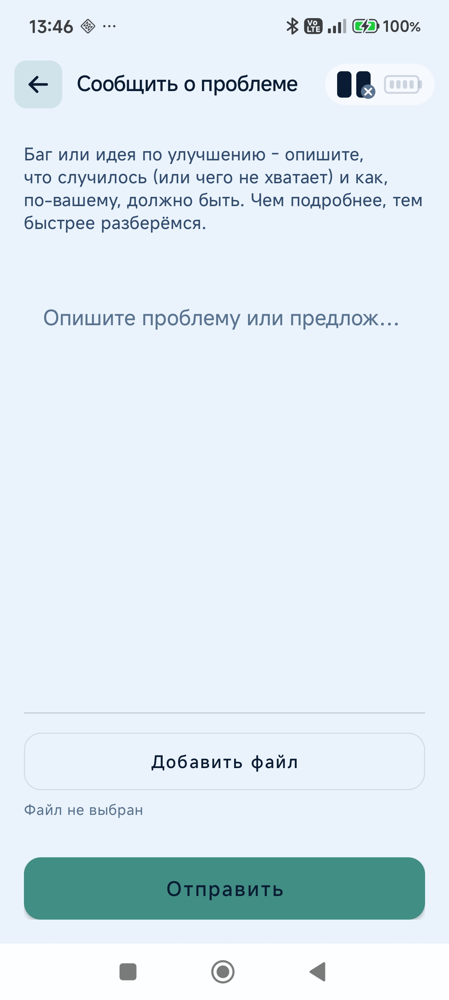
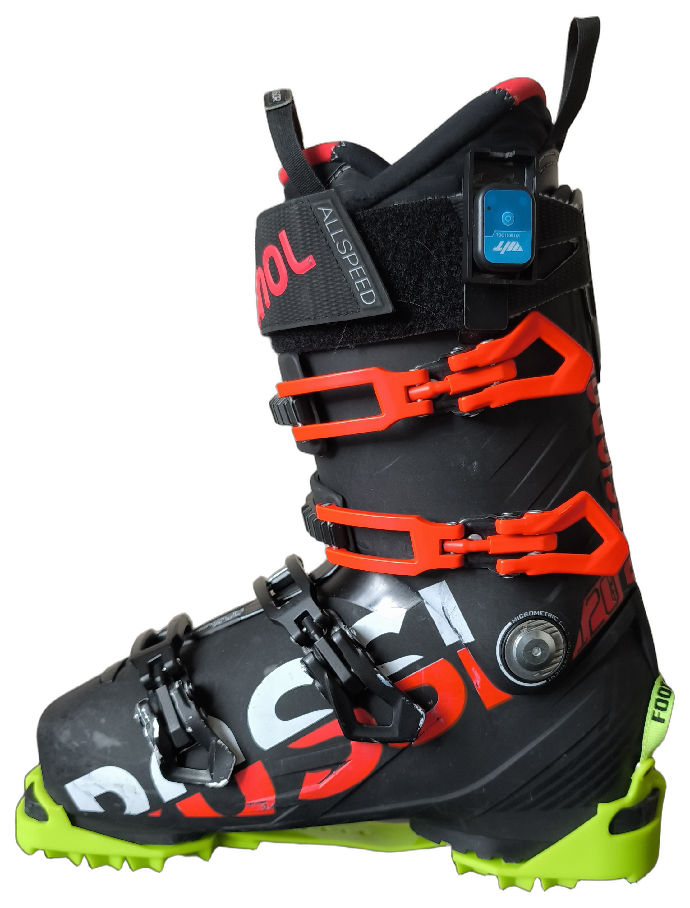

G-Force Skiing — персональный лыжный тренер в кармане. Датчики на ботинках, приложение считает GF Score, разбирает технику по метрикам и подсказывает, какой навык тренировать дальше — поворот за поворотом. Без датчиков работает как GPS-трекер маршрутов, которыми можно поделиться с друзьями.
Как это работает. Два небольших датчика крепятся на горнолыжные ботинки и по Bluetooth передают в телефон, как наклоняются и разворачиваются ваши лыжи — много раз в секунду. Приложение само находит в этом потоке отдельные повороты, измеряет каждый по десятку характеристик (насколько сильно вы поставили лыжу на кант, насколько круглой вышла дуга, одинаково ли работали левая и правая нога) и сводит их в одно понятное число — GF Score. Это не оценка «хорошо или плохо» вообще, а оценка того, насколько ваши повороты похожи на технически правильные для той манеры катания, которую вы сами выбрали перед спуском.
Про название оценки. Одно и то же число в разных местах интерфейса подписано то как GF Score, то как GForce Score — это один и тот же показатель. В руководстве он везде называется GF Score .
Термины в одну строку: спуск — один проезд вниз; сессия — день катания (много спусков и подъёмников); GF Score — оценка спуска 0–100; навык — одна отрабатываемая деталь техники, уровень 0–30; дисциплина — набор навыков (Параллельные лыжи, Карвинг, Короткий радиус); техника — что вы выбираете при старте сессии, она задаёт веса метрик в GF Score.
Катаетесь в своё удовольствие — приложение пишет всё само, заглядывать в него по ходу не нужно.
Отработка одного конкретного навыка. Приложение следит только за его метриками и уведомляет, когда поворот выполнен правильно.
Без датчиков приложение работает как обычный GPS-трекер: пишет маршрут, скорость и высоту спуска, но ничего не знает о технике катания.
Экран приветствия: краткое описание возможностей и ключевые цифры — частота опроса датчика, автономность, количество метрик, время калибровки.
Нажмите «Продолжить →» — откроется главный экран «Мои успехи».
Датчики на этом шаге не обязательны: без них можно записывать треки по GPS и делиться ими ( раздел 8).
Демо-данные. Приложение приходит заполненным: несколько спусков, пара «расшаренных» треков друзей, стартовый прогресс по навыкам — чтобы дашборд, история и тренировки были видны ещё до первого катания. Перед реальным использованием удалите их: «Удалить все данные» в разделе 3.
Открывается автоматически при первой настройке или вручную: «Конфигурация» → карточка «Датчик» ** → «Поиск и сопряжение новых G-Force датчиков»**.
Выключение датчика: зажмите кнопку — индикатор загорится ровным светом, затем погаснет.

Настройка выполняется один раз. Повторное открытие экрана запускает сопряжение заново — открывайте его только для перепривязки.
Состояние подключения, заряд каждого датчика и живые данные ориентации (закантовка, уклон, вращение) с обоих датчиков. Частота опроса — 100 Гц, как и указано на экране приветствия.

Датчики необходимо откалибровать перед катанием — это привязывает «ноль» ориентации именно к тому, как сейчас закреплён каждый датчик на конкретном ботинке. Достаточно сделать это один раз: перед каждым катанием повторять не обязательно, но лишняя калибровка не навредит.
Калибровку можно проводить неограниченное количество раз — это не разовая настройка «на всю жизнь датчика», а просто фиксация текущего нейтрального положения. Её основная цель — сообщить приложению, как именно сейчас закреплён датчик, чтобы отсчитывать наклоны от этой точки. Если вы перестегнули ремешок, переставили датчик на другую ногу или просто не уверены, что положение верное — откалибруйте заново, это не навредит и займёт пару секунд.
Если датчик всё же немного наклонился и калибровку не обновили, максимум что от этого может пострадать — угол склона (экспериментальная метрика «Наклон склона»). На остальные метрики (углы закантовки, синхронность лыж, TPC и другие) это не влияет.
Калибровка сохраняется на телефоне и переживает переподключение, перезапуск приложения и даже смену датчиков местами — повторять её нужно только если датчик физически сдвинулся на ботинке, ремешок ослаб, или вы переставили датчик на другую ногу.
В отличие от смещения датчика во время катания (см. ниже), смену ноги приложение само не отслеживает. Проверить, что датчик закреплён на нужной стороне, можно на экране «Датчик» по данным ориентации в реальном времени (раздел 2.2).
Если датчик сдвинулся во время катания или тренировки. Приложение непрерывно, в фоне, сравнивает текущее положение каждого датчика с тем, что было записано при калибровке. Если положение заметно отличается несколько секунд подряд (датчик съехал под ремешком, датчик случайно задели) — приложение честно об этом предупредит, а не будет молча считать метрики по неверным данным:

Что делать: верните датчик в исходное положение на ботинке (заново калибровать не обязательно, если он просто съехал и вы его поправили обратно) — либо, если теперь он закреплён иначе осознанно, откалибруйте повторно тем же способом, что и в начале.
Предупреждение и вибрация автоматически прекращаются, как только положение датчика снова совпадает с калибровкой, либо после повторной калибровки.
«Конфигурация» → карточка «Лыжник».

| Поле | Зачем нужно |
|---|---|
| Имя | подпись при шаринге треков |
| Уровень | задаёт порог «навык освоен» (7 / 17 / 27 из 30), рекомендации после спуска и доступные техники |
| Радиус лыжи (8–30 м) | радиус бокового выреза ваших лыж — в расчёте метрик карвинга |
| Вес (30–150 кг) | оценка калорий |
Новичок и Средний выбираются вручную. Эксперт присваивается автоматически, когда прогресс навыков достигнут по всем трём дисциплинам — вручную его выбрать нельзя.
Пока выбран «Новичок», техники «Карвинг» и «Короткий радиус» недоступны — ни для сессии на «Склоне» (раздел 5.1), ни для тренировки навыков (раздел 10): открыта только «Параллельные лыжи». Смена уровня — ручное действие, не привязанное к реальному прогрессу по навыкам: достаточно переключить профиль на «Средний», и обе техники сразу станут доступны.

«Экспорт / Импорт» — ручной перенос данных на новый телефон: «Экспорт» сохраняет сессии, историю и настройки профиля; «Импорт» на новом телефоне восстанавливает всё из сохранённого. Не зависит от автоматического бэкапа Android (см. ниже) и не привязан к Google-аккаунту.
«Удалить все данные» — полный необратимый сброс: все спуски, история, прогресс тренировок, в том числе демо-данные (раздел 1). Демо- и реальные данные не различаются, стирается всё разом, повторно демо не создаётся.
Где лежат данные. Только локально на устройстве, на сервер не отправляются. При переходе на новый телефон Android может перенести их своей штатной резервной копией (Google-аккаунт): на **новом ** телефоне при первоначальной настройке выберите «Восстановить из резервной копии» и тот же Google-аккаунт. Бэкап на старом телефоне должен успеть сняться заранее — обычно сам, на Wi-Fi при зарядке, раз в 1–2 дня.
Главный экран (вкладка «Дом»). Статистика текущего сезона; сезон определяется автоматически по датам последних сессий — переключателя сезона нет.

Ниже — уровень по каждой дисциплине (Параллельные лыжи, Карвинг, Короткий радиус); кольцо показывает уровень по шкале 0–30.

Диапазоны 1–10 / 11–20 / 21–30 подписаны как «Новичок» / «Средний» / «Эксперт». Это метка достигнутого уровня, а не ступень, которую нужно «открывать» — шкала одна и та же, от 0 до 30.
Окно «Склон» (средняя иконка нижней навигации) — центр управления сессиями.


Идея простая: приложение не хвалит за один удачный спуск и не ругает за один неудачный, а смотрит, что вы умеете стабильно. Поэтому уровень навыка поднимается только тогда, когда результат повторяется из раза в раз, а в «Поработать над этим» попадает самый простой из ещё не освоенных навыков — тот, за который логично взяться следующим. Ниже — как это считается.
Кнопка внизу экрана открывает настройку сессии.

| Режим | Что делает |
|---|---|
| Трасса | тихая запись, без подсказок |
| Фрирайд | один спуск, вне трасс |
| Обучение | разбор после спуска |
| Тренировка | уведомления о правильном выполнении прямо во время спуска |
Прокрутите вниз и выберите технику катания — она задаёт веса метрик в GF Score:

«▶ Поехали» запускает запись. Пока сессия активна, кнопка внизу экрана «Склон» меняется на «■ Готово на сегодня»:

Откройте спуск из истории или с карточки «Последний спуск»:

Зелёная карточка — итоговый GF Score, время / повороты / перепад / калории и макс. скорость. Кнопка «Расчёт» открывает разбивку:

Счёт устроен просто. У каждой метрики есть свой разумный диапазон — от значения, типичного для начинающего, до значения, типичного для эксперта. Ваш результат переводится в проценты внутри этого диапазона: 0% — вы у нижней границы, 100% — у верхней или выше. Затем проценты складываются не поровну, а с весами по выбранной технике: в карвинге больше всего значат перегрузка и форма дуги, в коротком радиусе — перегрузка и синхронность лыж. Сумма весов всегда 100%, поэтому GF Score — это число от 0 до 100.
Отсюда главное следствие: сравнивать между собой имеет смысл только спуски одной техникой. Один и тот же проезд, посчитанный как «Карвинг» и как «Параллельные лыжи», даст разные числа — не потому что вы катались по-разному, а потому что от вас ожидали разного.
Набор метрик один и тот же — от техники зависят веса и, значит, порядок в разбивке.
Порядок метрик по убыванию веса:
| Техника | Метрики по убыванию веса |
|---|---|
| Карвинг | Перегрузка → Форма поворота → Сброс давления → Скорость закантовки / Угол закантовки / Завершённость поворота (примерно поровну) → Синхронность лыж → Набор угла → Доля параллельной фазы → Плавность кантования |
| Короткий радиус | Перегрузка → Синхронность лыж → Сброс давления → Угол закантовки → Скорость вращения → Форма поворота → Доля параллельной фазы |
| Параллельные лыжи | Форма поворота → Перегрузка / Ритм поворотов / Плавность кантования (примерно поровну) → Сброс давления / Угол закантовки (примерно поровну) → Синхронность лыж → Доля параллельной фазы → Скорость закантовки → Завершённость поворота |
Что означает каждая метрика:
| Метрика | Что измеряет | Хорошо выглядит так |
|---|---|---|
| Перегрузка | пиковая боковая перегрузка в повороте, g | выше скорость и меньше радиус — больше G; у экспертов 2–3 g |
| Форма поворота | равномерность прохождения дуги | ближе к минимуму — чистая круглая дуга; выше — угловатая дуга, юз |
| Сброс давления | разгрузка лыж в момент смены канта | активная разгрузка облегчает вход в следующий поворот |
| Скорость закантовки | как быстро меняется угол закантовки | быстрая, решительная — против вялого кантования |
| Угол закантовки | максимальный наклон лыжи на ребро | у экспертов 50–70° |
| Завершённость поворота | на сколько градусов довёрнуты лыжи | большой угол — закрытый поворот с контролем скорости |
| Синхронность лыж | согласованность левой и правой лыжи | высокая — лыжи работают как одно целое |
| Набор угла | равномерность нарастания угла в рабочей фазе | ровное нарастание — контроль дуги через весь апекс |
| Доля параллельной фазы | сколько поворота лыжи идут параллельно, а не в плуге | выше — меньше плуге |
| Плавность кантования | стабильность угла без рывков | высокая — чистый рез; низкая — соскальзывание, «дребезжание» |
| Скорость вращения | доворот лыж в закантованной фазе (только «Короткий радиус») | — |
| Ритм поворотов | поворотов в минуту (скользящее среднее) | высокий — короткие быстрые повороты |
В конце экрана — два инсайта:

Нажатие на метрику или инсайт разворачивает описание и — если у метрики есть привязанный навык — ссылку на тренировку.
Если во время сессии велась видеозапись (кнопка-камера в шапке экрана «Склон»), на карточке спуска и на экране расчёта появляется «▶ Видео» — совместное воспроизведение видео и графика GF score с бегущим маркером:

Карточка «История» на экране «Склон» → список курортов, где вы катались:

Выберите курорт — откроется список спусков с фильтром Сегодня / Сезон / Всё время:

Сверху сводная карточка за выбранный период (лучшая оценка, число спусков, суммарные повороты / перепад / калории), ниже — спуски по датам. «Очистить историю» удаляет спуски выбранного курорта; профиль и прогресс навыков не затрагивает.
Спуски из тренировок (раздел 10) попадают в общую историю наравне с обычными — отдельного списка для них нет, но под названием спуска есть пометка «Тренировка».
Если GPS-трек не удалось сопоставить с известной трассой (нет офлайн-данных курорта либо трассы ещё нет в OpenStreetMap), спуск попадает в «Находки». В списке только 10 последних, самые новые сверху:

Нажмите запись, чтобы добавить её на карту вручную.
Трасса — название курорта, название трассы, сложность:

Подъёмник — название курорта, название и тип (гондола / кресельный / бугельный):

Вкладка «Тренировка» → дисциплина:

В дисциплине (Параллельные лыжи / Карвинг / Короткий радиус) — набор навыков с текущим уровнем 0–30:

Внутри навыка — описание, текущий уровень, ссылка «Как измеряется» и цель следующего уровня с коротким обучающим видео:

Ниже — числовая цель уровня (например, «8 поворотов подряд с шириной плуга < 10°») и кнопка * «Тренировать», запускающая тренировку на склоне. Во время тренировки она превращается в «Стоп» ** — нажмите повторно, чтобы завершить сессию. Если перейти на другой навык той же дисциплины, сессия не прерывается и кнопка там сразу показывает «Стоп»; переход в другую дисциплину завершает текущую сессию и начинает новую. Если навык не даётся — блок «Застряли? Попробуйте упражнение»* с видео вспомогательных упражнений:

GF Score во время тренировки считается так же, как в обычной сессии, а сам спуск после завершения попадает в общую историю (раздел 8) с пометкой «Тренировка» под названием.
Другая дисциплина, «Карвинг», со своим набором навыков:

«Конфигурация» → карточка «Карта» — загрузка трасс и подъёмников из OpenStreetMap:


Нажатие на превью открывает карту на весь экран — жесты масштабирования и перемещения:

Если нет интернета и карта в этом месте не скачана заранее, вместо пустого фона показывается значок карты и надпись «Нет соединения».
Отдельная карточка в «Конфигурации» — загрузка ваших треков в OpenStreetMap:

После подключения кнопка меняется на «Отключить», а находки ( раздел 9) можно отправлять на карту одной кнопкой.
Каждый подключает свой аккаунт OpenStreetMap, а не общий аккаунт приложения. Это было сделано намеренно: если кто-то отправит некорректные данные, санкции OpenStreetMap коснутся только его аккаунта, а не заблокируют загрузку для всех пользователей сразу.
Треки, которыми с вами поделились, — карточка «Треки друзей» на экране «Склон»:

Список работает как своя история (фильтр Сегодня / Сезон / Всё время). Открытая запись показывает те же детали спуска — карту, GF Score, статистику:

Поделиться своим спуском — кнопка «Поделиться» на экране деталей любого своего спуска ( раздел 6).
Вкладка «Конфигурация» (последняя иконка нижней навигации) — вход во все разделы настроек:

| Карточка | Куда ведёт |
|---|---|
| Датчик | статус подключения, заряд, калибровка — раздел 2.2 |
| Лыжник | профиль — раздел 3 |
| Карта | офлайн-данные — раздел 11.1 |
| Интеграция с OSM | загрузка треков — раздел 11.2 |
| Сообщить о проблеме | баг или предложение по улучшению — см. ниже |
| Настройки | единицы измерения, голосовые подсказки |

Экран для обратной связи прямо из приложения — подходит и для бага, и для идеи по улучшению:

Опишите, что случилось (или чего не хватает) и как, по-вашему, должно быть, при желании приложите файл (например, скриншот) кнопкой «Добавить файл» (до 1 МБ), и нажмите «Отправить». Письмо уходит через ваш собственный почтовый клиент на gf_skiing@mail.ru — само приложение ничего никуда не отправляет само по себе. Единственное, что приложение хранит о вас — это имя в профиле лыжника (раздел 3), и вы вольны указать там просто ник, а не настоящее имя.
Чекбокс «Приложить логи и базу данных» включён по умолчанию для отчётов об ошибках: вместе с письмом уйдёт архив с техническим логом приложения и локальной базой ваших тренировок — это сильно упрощает разбор причины бага. Вы можете снять галочку и отправить отчёт без вложения, но тогда разобраться в проблеме без лога и данных сессии будет намного сложнее.
G-Force не привязан к фирменному «железу» — пара датчиков собирается самостоятельно из недорогих компонентов с маркетплейса.
На один датчик; для работы приложения нужны два — на левую и правую ногу:
| Деталь | Роль | Примерная цена |
|---|---|---|
| WITMOTION WT9011DCL | BLE-модуль с акселерометром, гироскопом и магнитометром — передаёт данные в приложение | основная часть стоимости |
| Пластиковая коробочка | корпус, защита платы от влаги и ударов | — |
| Металлическая клипса | крепление на ремень ботинка | — |
Всё куплено на Ozon; себестоимость одного датчика в сборе — около 2500 ₽, пары — ~5000 ₽. Заметно дешевле готовых фирменных решений с той же функциональностью.
Инструменты: небольшая крестовая отвёртка (клипса крепится винтами) и, желательно, двусторонний скотч или термоклей — если посадка датчика в коробочке окажется свободной.


Повторите для второго датчика. Какой из них станет левым, а какой правым, на этапе сборки не важно — это определяется при первом сопряжении: вы встряхиваете один датчик, он назначается левым ( раздел 2.1).
Клипса рассчитана на крепление сбоку ботинка, на ремне — так, чтобы датчик плотно прилегал и не болтался: любой люфт добавляет шум в данные акселерометра и гироскопа. Крепите оба датчика * симметрично*, на одном и том же месте на обоих ботинках, иначе показания закантовки несопоставимы между ногами.

После сборки выполните калибровку в нейтральной стойке ( раздел 2.2). В новом корпусе возможен небольшой дрейф магнитометра из-за металла клипсы — если курс или вращение нестабильны, откалибруйте ещё раз, стоя на лыжах в ботинках.
| Симптом | Что проверить |
|---|---|
| Датчики не находятся при поиске | Включены ли оба (индикатор мигает); включён ли Bluetooth и выданы ли разрешения на геолокацию |
| GF Score не считается, метрики пустые | Датчики подключены? Без них считаются только GPS-метрики (раздел «Запись трека без датчиков») |
| Уровень навыка не растёт | Нужно 5 спусков с засчитанным результатом и не меньше 8 поворотов в каждом; в тренировке — 8 правильных поворотов подряд (раздел 5) |
| Спуск попал в «Находки» | Курорта нет в офлайн-данных или трассы нет в OpenStreetMap — загрузите регион (раздел 11.1) или добавьте трассу вручную (раздел 9) |
| Карта пустая, «Нет соединения» | Тайлы не скачаны и сети нет — загрузите регион по Wi-Fi заранее |
| Показания закантовки разные по ногам | Датчики закреплены несимметрично или один болтается (раздел 14.3); перекалибруйте |
| Сессия не закрылась | Нажмите «■ Готово на сегодня»; иначе закроется сама через час без движения |
| «Добавить» в «Находках» не отправляет | Не подключён OSM-аккаунт (раздел 11.2) |
Документация подготовлена для G-Force Skiing.